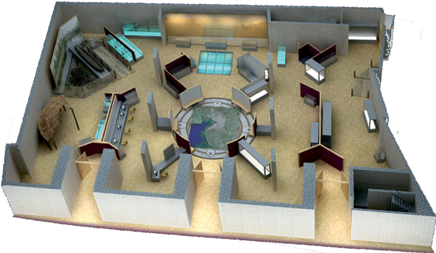
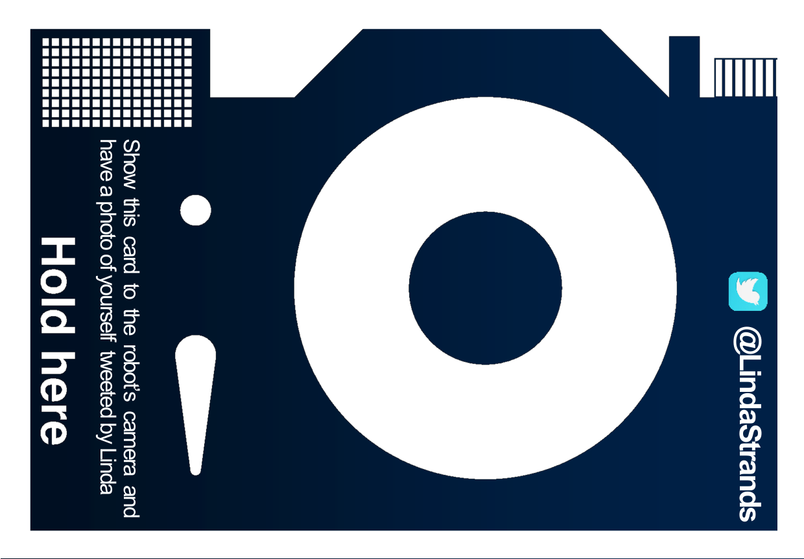
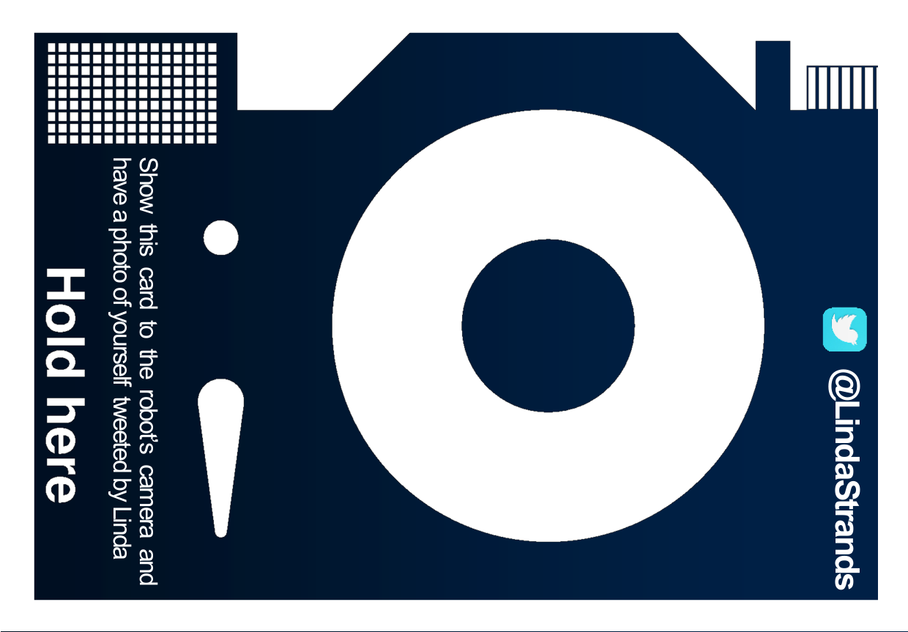

Linda, the robotic guide

Show me your card to tweet a picture


Pressing one of the
buttons above will send the robot to a location to:

Tweet an image of the
location to @LindaStrands
Tell you about the exhibition in this part of the museum
Tell you about the exhibition in this part of the museum